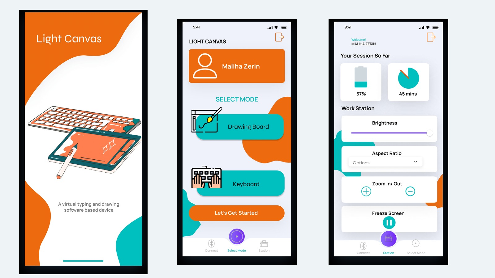
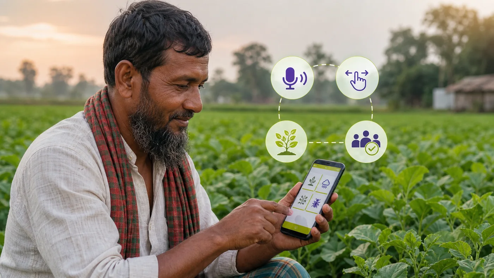
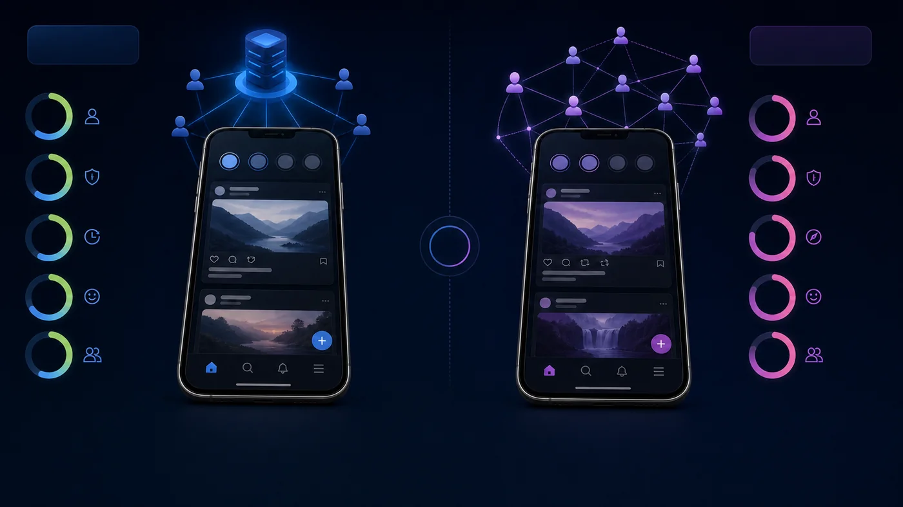
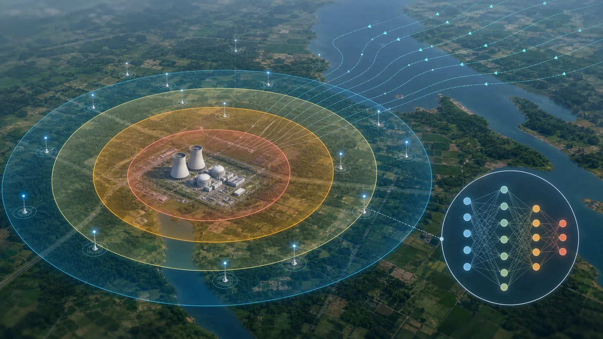

Journal · Q1 · IF 4.5
Papers, peer-reviewed.
Tap any card for the full story — authors, domain, stack and a link to the paper.

Conference · ACMLight Canvas: An IoT-Based Interactive Virtual Drawing System
Open details ↗Conference · IEEE
From Keywords to Context: SBERT vs Keyword-Based ML for Job Recommendation
Open details ↗
🏆 Top 2% Paper AwardAssessing Usability of Agricultural Mobile Apps for Illiterate & Semi-Literate Farmers
Open details ↗
Accepted · in pressEvaluating UX in Decentralized Social Media: Web3 vs Web2
Open details ↗
Under review